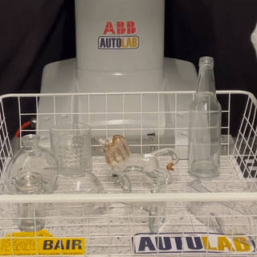
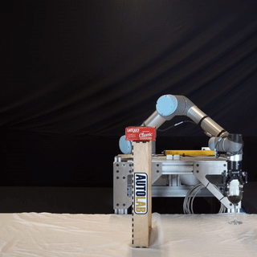
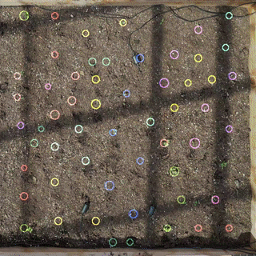
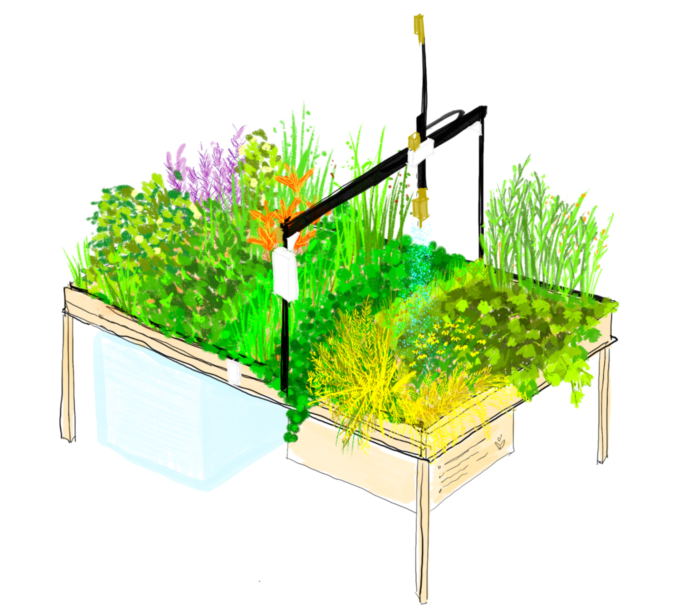

Yahav Avigal
I am a fourth year PhD student at UC Berkeley, advised by Professor Ken Goldberg in the AUTOLab.
My research interests are in robotic grasping and motion planning in dynamic environments using deep learning. In my work I explore how to: transport objects fast without dropping or spilling their content, leverage NeRF to manipulate transparent objects, and applying dynamic motions to manipulate garments.
Email / Google Scholar / Twitter / LinkedIn
{kind=link}
Clothes Folding

Best Paper Award
RoboCup Award
International Conference on Intelligent Robots and Systems (IROS) , 2022
Manipulating Transparent Objects

Conference on Robot Learning (CoRL) , 2021
Press: WiReD
Grasp Optimized Motion Planning

Yahav Avigal*,
Jeffrey Ichnowski*,
Max Cao,
Ken Goldberg
International Workshop on the Algorithmic Foundations of Robotics (WAFR) , Jun 2022

Jeffrey Ichnowski,
Yahav Avigal,
Yi Liu,
Ken Goldberg
International Conference on Robotics and Automation (ICRA) , May 2022

Jeffrey Ichnowski,
Yahav Avigal,
Vishal Satish,
Ken Goldberg
Science Robotics , Nov 2020
Press:
Berkeley News /
New Scientist /
TechCrunch /
TC 日本 /
The Times /
Yahoo! /
Tech Xplore /
Mirage /
ScienceDaily /
Cosmos /
Analytics Insight /
engineering.com /
The Robot Report
Autonomous Gardening

Yahav Avigal,
Jensen Gao,
William Wong,
Kevin Li,
Grady Pierroz,
Fang Shuo Deng,
Mark Presten,
Mark Theis,
Jackson Chui,
Paul Shao,
Huang Huang,
Atsunobu Kotani,
Satvik Sharma,
Rishi Parikh,
Michael Luo,
Sandeep Mukherjee,
Stefano Carpin,
Joshua H. Viers,
Stavros Vougioukas,
Ken Goldberg
International Conference on Robotics and Automation (ICRA), Jun 2021

Yahav Avigal,
Jensen Gao,
William Wong,
Kevin Li,
Grady Pierroz,
Fang Shuo Deng,
Mark Theis,
Mark Presten,
Ken Goldberg
Conference on Automation Science and Engineering (CASE) , Aug 2020
Best Student Paper Award
Transactions on Automation Science and Engineering (TASE) , Early Access